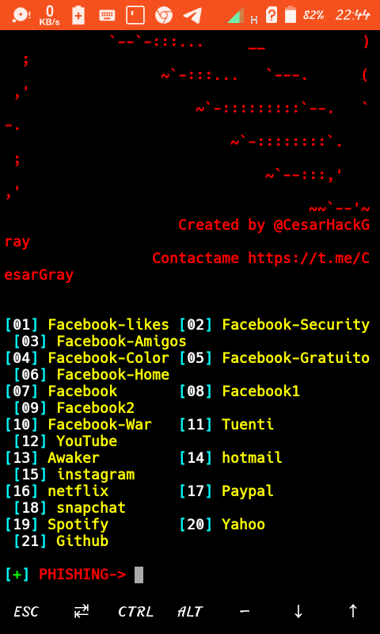

<title>HOW TO HACK SOCIAL MEDIA PLATFORMS BY PAGE PHISING..</title>
<head>
<link rel = "icon" href = "/IMG-20210911-WA0021.jpg

">
<script async src="https://pagead2.googlesyndication.com/pagead/js/adsbygoogle.js?client=ca-pub-7628019015914415"
     crossorigin="anonymous"></script>
<link rel = "stylesheet" href = "style2.css">
<meta name = "viewport" content = "width=device-width, initial-scale=1">
</head>
<nav>


<div class = "nav-bar">
<a href = "index.html">HOME</a><a href = "tutorials.html">TUTORIALS</a><a href = "blogs.html">BLOGS</a>


</div>
</body>
</nav>

<section>
<body></body>
<center><u><font color = "red">HACKING SOCIAL MEDIA PLATFORMS</font></u></center>
<n><u>NOTE:</u>The following content is intended for educational purposes only..edwine_tech will not be blamed for illegal use of the above content...<br>Remember..hacking is illegal..</n><br>
<div class = "step"><br>INSTALLATION..</div>
<ul>
  $ apt update && apt upgrade<br>
  $ git clone https://github.com/Cesar-Hack-Gray/SocialSploit
   
    
 <br>
 $ cd SocialSploit<br>
$ chmod +x *
 
 
  
  
  
</ul>
<div class = "step"><br>RUN</div>
<ul>
  $ ./Sploit<br>
  At this step...termux will install all required dependencies and modules..It will then display a banner as shown below;
  
  Firstly...turn on mobile hotspot...
  Then you will have to choose option...if it is facebook, choose the figure in accordance...<br>
  In this tutorial...let me use instagram..which is option "15"..<br>
  Ngorok will be started and a php srever too...<br>Finally a liny will be generated at the bottom which you will send to victim as shown below;<br>
  <br>
  Send the link to victim and if the victim opens link, termux will inform you..<br>
  The link created for instagram will look as below;<br> 
  Whatever info your victim puts in webpage, it will directly be sent to you..It is illustrated below;<br>
  
  
</ul>
<br>
<br>
<center><font color = "green" face = "georgia">THAT'S IT...ENJOY..</font></center>


<table width = "100%"><tr><td width = "100%" bgcolor = "red"><font face = "courier" size = "4"><center>All rights reserved©<br>Edwine_labs uganda</center></font></td></tr></table>
</section>


<style>
  body {border:2px dotted green;}
  u {font-size:20px;}
  n {font-family:georgia; color:red;}
  
  .step {color:red; font-family:courier; text-align:center; font-size:20px;}
  ul {font-family:georgia;}
  
  
  
</style>
